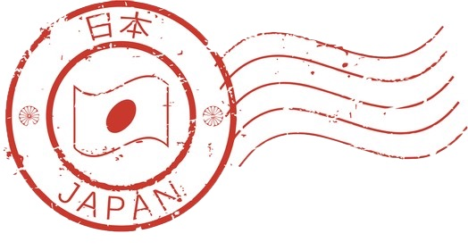

Home · 2026-11-27 · Six
む mu ろく roku
Usage: Six commonly expresses "six" in written Japanese.
Example: 六月 (ろくがつ, rokugatsu): June; 六階 (ろっかい, rokkai): sixth floor
Stroke order
mu
ro
ku

G Fonts Japanese typesHome · 2026-11-27 · Six
む mu ろく roku
Usage: Six commonly expresses "six" in written Japanese.
Example: 六月 (ろくがつ, rokugatsu): June; 六階 (ろっかい, rokkai): sixth floor

G Fonts Japanese types